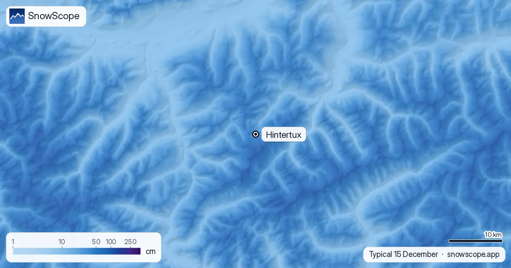

Hintertux Glacier in December: where the value is in a sure-snow week
The snow question at Hintertux is settled: on a typical 15 December the summit (3245 m) holds 98 cm, and in the week of 15-21 December every single winter in 46 years had 30 cm or more up there. The real choice is whether the price and the terrain fit your week.
See the live snow forecast for Hintertuxer Gletscher in the SnowScope appSnow depth, powder alerts and the 3D map, free.
Top to mid: snow is reliable
At mid-mountain (2372 m) a typical 15 December has 52 cm. In the week of 15-21 December, 87 out of 100 winters had 30 cm or more; by Christmas week that rises to 93 out of 100. Even a thin year (1 winter in 10) leaves 44 cm at the top on 15 December, and last winter, which was weaker than average, still delivered 44 cm there.
Snow at the top stays thick because it falls early. The first day with 30 cm on the ground at the summit is 29 September; at mid-mountain it is 23 October. By December, the glacier has months of buildup to draw on.


The valley problem in December
The base station sits at 1500 m, where December is thin. A typical 15 December has only 16 cm there, and only 7 out of 100 winters had 30 cm or more in the week of 15-21 December. The usual first day with enough cover for safe skiing at the valley is 7 January.
In December at Hintertux you plan to ski the upper half and use the lifts to ride down. The lower runs are a bonus if snow is heavier than usual, not the plan.
Price: flat rate, no December discount
An adult day pass costs EUR 82 all season; a 6-day pass is EUR 399. There is no cheaper tier before Christmas, so December costs the same as February. This is different from resorts that offer an early-season price.
The saving is for families: children born after 1 January 2021 ride free with an adult (you need ID). For a family with a small child, that change is bigger than any seasonal rate.
How this winter compares with the past
December snow at the top has held steady over 46 winters: the average was 95 cm in the first 15 winters and 101 cm in the last 15. The glacier keeps its December promise. At mid-mountain the picture is different: the December average fell from 54 cm in the first 15 winters to 45 cm in the last 15.
That trend matters if you want to ski the upper runs for the whole week. Mid-mountain was more reliable in the past, but it still stays above the 30 cm comfort line in most years.
Hintertux versus Kitzsteinhorn
The Kitzsteinhorn above Kaprun is the nearest glacier comparison. Both charge EUR 82 for a day pass in the main season. At Kitzsteinhorn a typical 15 December has 137 cm at its top (3024 m), but only 40 cm at mid-mountain (1894 m). Hintertux has 52 cm at mid-mountain for the same day price.
For a 6-day December pass, Hintertux costs EUR 399 against Kitzsteinhorn's EUR 440. If you want to ski the middle slopes for a week in December, Hintertux offers more snow and better value.
When to book this glacier
Pick Hintertux if you have a fixed week in December, cannot move dates and want certainty at the top. The numbers back that choice. If you can wait for a good forecast or move your week, a high village resort with an early-season price may cost less and give you more variety.
Tips for skiers
- Plan to ski from about 2372 m upward in December; use the lifts to descend. The valley runs are rarely skiable in December.
- Bring proof of birth for children born after 1 January 2021; they ski free with an adult (ID required).
- December at 3245 m is cold and often windy. Pack a face mask, spare gloves and hand warmers.
- Off-piste skiing on a glacier means hidden crevasses; go only with a guide and check the official avalanche bulletin from Avalanche.report – Euregio Tyrol.
About these numbers
Resort snow depths are the deepest snow on the resort's upper slopes on the date shown; they are estimates for an area, not a measurement at one point. Forecasts can change. Always read the official avalanche bulletin before going off-piste.
Official avalanche bulletins: Avalanche.report – Euregio Tyrol
Cite this report
For research, teaching or the press: the numbers and charts are free to reuse under CC BY 4.0 with this citation.
SnowScope (2026), Hintertux Glacier in December: where the value is in a sure-snow week, https://snowscope.app/blog/en/2026/11/hintertux-glacier-december-value-ski-week.html, accessed 2026-11-14
SnowScope (Atlas Labs). (2026, November 14). Hintertux Glacier in December: where the value is in a sure-snow week. SnowScope snow reports. https://snowscope.app/blog/en/2026/11/hintertux-glacier-december-value-ski-week.html
BibTeX
@misc{snowscope2026hintertuxglacierdecember,
author = {{SnowScope (Atlas Labs)}},
title = {Hintertux Glacier in December: where the value is in a sure-snow week},
year = {2026},
month = nov,
howpublished = {\url{https://snowscope.app/blog/en/2026/11/hintertux-glacier-december-value-ski-week.html}},
note = {Published 2026-11-14 13:29 UTC; accessed 2026-11-14}
}· CC BY 4.0 · Methods, data and tools →
Hintertuxer Gletscher: snow and temperature by height, this winter vs last (tools) →
Follow Hintertuxer Gletscher
Free: a message when fresh snow is coming, and the forecast every morning.
More snow reports

Next week Ischgl's top slopes collect 18 cm (forecast 23–29 Nov). Thursday 26 is the heaviest day. Data from 16 November 2026.

Next week at Flaine: 27 cm forecast at the top (9–46 cm range), with four key snow days. Data from 16 November.

Engelberg snow forecast for 23–29 November 2026: 22 cm at the top (2–42 cm), 7 cm at the base, snowiest day Thursday 26 November, with neighbours compared.